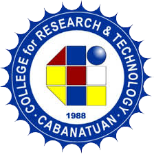
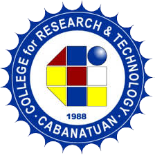
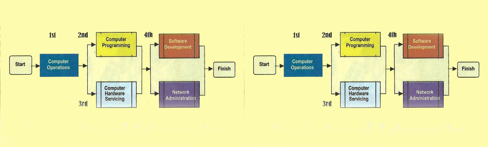

College for Research & Technology
Burgos Avenue, Cabanatuan City
Email:crt.cabanatuan@gmail.com/crt.cabanatuan@facebook.com


Bachelor of Science in Hotel & Restaurant Management
(Two-year Associate in HRM)
This course is designed to make the student a well-rounded hotel and restaurant practitioner in land or sea. It includes enough knowledge in the operation and maintenance of a hotel or a restaurant particularly in Food and Beverage Services, Hot and Cold Kitchen operation, Food Processing, Baking & Pastry, Bar & Barista Services. Also, students can avail of free training on Household Services or Therapeutic Massage Therapy.
Moreover, CRT now applies e-Learning approach designed after the Competency-Bases Training (CBT) of the Philippines Australia Quality Vocational Education and Training (PAQTVET) model and integrates the ladderized option for all competencies in hotel and restaurant services; that is, even if the students have not completed the 4-year degree program, they are still given qualification competencies provided by TESDA which is applicable for employment. The program also includes exposure to different hotels and restaurants and actual apprenticeship in ship companies bound to Cebu, Iloilo, Zamboanga and Davao and other foreign destinations like Hongkong, Singapore and the like.
Bachelor of Science in Tourism Management
(Two-year Tourism Services)
This course is aimed towards the development of personnel in order to meet the needs of the rapidly growing tourism industry. After completion of the course a student will be well-equipped to handle the queries and work in the travel, tour, or any other segment of the leisure industry.
The study includes the knowledge in travel Agency Management like regulations, organizations, recognition of travel agency; Tour Operation; Hospitality Management like type accommodations available, different categories of hotels, different departments of hotel; Modes of Transportation and Airline Ticketing; Socio cultural Resource; Marketing in the Hospitality industry like nature, classification and characteristics of services and their marketing implications, methodology considerations and pricing of Tour Packing, designing and printing of Tour Brochure and many more.
Moreover, CRT integrates the ladderized option for all competencies in the tourism industry; that is, even if the students have not completed the 4-year degree program, they are still given qualification competencies provided by TESDA which is applicable for employment. The program also includes exposure to different hotels, travel agencies.
Bachelor of Science in Accounting Technology
(Two-year Computer Management)
TA Bachelor of Science in Accounting Technology prepares the graduate for a career as an accountant, bookkeeper, accounts receivable or payable supervisor or a billing or financial professional. The course allows students to combine their business knowledge with the exacting skills needed in accounting to be an advisor, supervisor or professional within any business environment.
The objectives of this Accounting Technology program are to acquire well-balanced combination of knowledge and skills in areas ranging from accounting, finance, business, and computer technology so that the graduate can prove effective in many professional environments; devise, analyze and implements accounting programs and software applications for business; and serve as a team member and/or leader on various projects.
This course is designed for an associate program with applicable National Certificate on Bookkeeping and Micro-finance as well as Accounting Technician. Moreover, CRT applies the e-learning approach designed after the Competency-Based Training (CBT) of the Philippines Australia Quality Technical Vocational Education and Training (PAQTVET) model to assure quality training for all students.
Bachelor in Technical Teacher Education
Bachelor in Technical Teacher Education is a degree that prepares individuals to teach specific vocational technical education programs at various educational levels, from elementary to tertiary, obtain their bachelor's degree as well as earn TESDA certification. In addition, a wide range of courses in technology education is taught at this course that prepares them to gain knowledge, skills, and training necessary for the industry. Also they are prepared for technology integration in all areas of specialization that includes computer applications and networks, e-learning, to name just a few.
This program is designed to provide prospective teachers with strong academic, pedagogical, and laboratory-based experiences to enhance their technology teaching performance in all levels. This course is designed as a ladderized program that an individual can earn after each major courses. Moreover, CRT applies the e-Learning approach designed after the Competency-Based Training (CBT) of the Philippines Australia Quality Technical Vocational Education and Training (PAQTVET) model to assure quality training for all students.

Bachelor of Science in Computer Technology
(Two-year Associate in Computer Technology)
this course provides a rigorous foundation in both theoretical and practical aspects of computer technology (hardware and software) with telecommunication technology (data, image, and voice networks) and is designed to provide intensive background in the design, analysis, programming, and PC application, including the knowledge in distributive data management system in the use of Local Area Network, and other computer communication facilities.
Moreover, CRT integrated the technical courses for the ladderized option i.e., PC OPERATIONS-1st year COMPUTER PROGRAMMING or HARDWARE SERVICING-2nd year and SOFTWARE ENGINEERING in the 4th year with specialization on Java Programming, Web Development, Graphic Design and Digital Animation; likewise, we have included the E-Learning approach designed after the Competency Based Curriculum (CBT) of Philippine Australia Quality Technical Vocational Education & Training (PAQTVET) model in our curriculum.